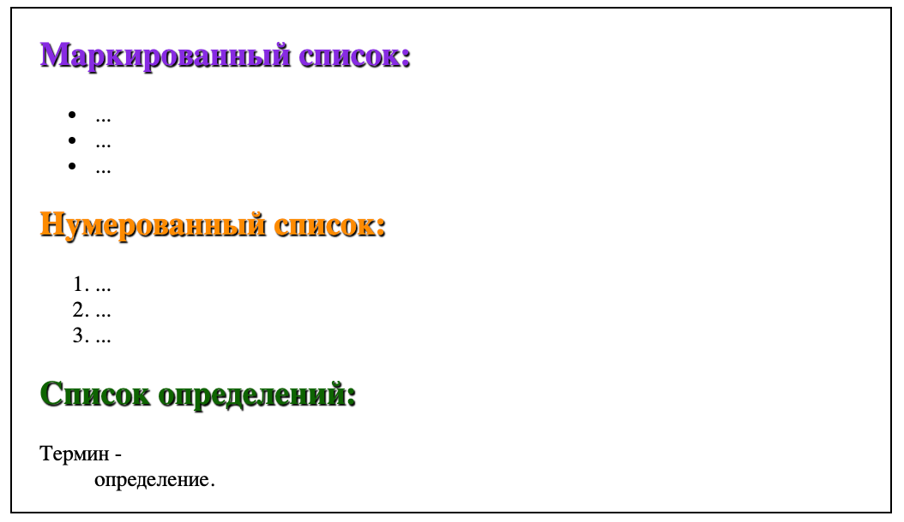

Маркированный и нумерованный списки представляют собой контейнеры, внутри которых располагаются элементы списка.
<ul></ul>(unordered list).
<li></li> (list item).
<ol></ol> (ordered list).
<li></li>(list item).
С помощью CSS-свойств можно изменить внешний вид маркера списка, добавить изображение для маркера и изменить его местоположение.

<dl></dl> (definition list)
<dt></dt>,
а для вставки определения — <dd></dd>.
Списки можно помещать друг в друга. Например, внутрь маркированного списка можно вложить нумерованный список, и наоборот.